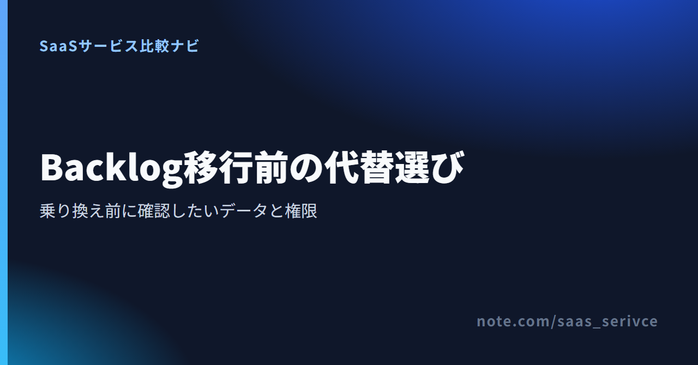
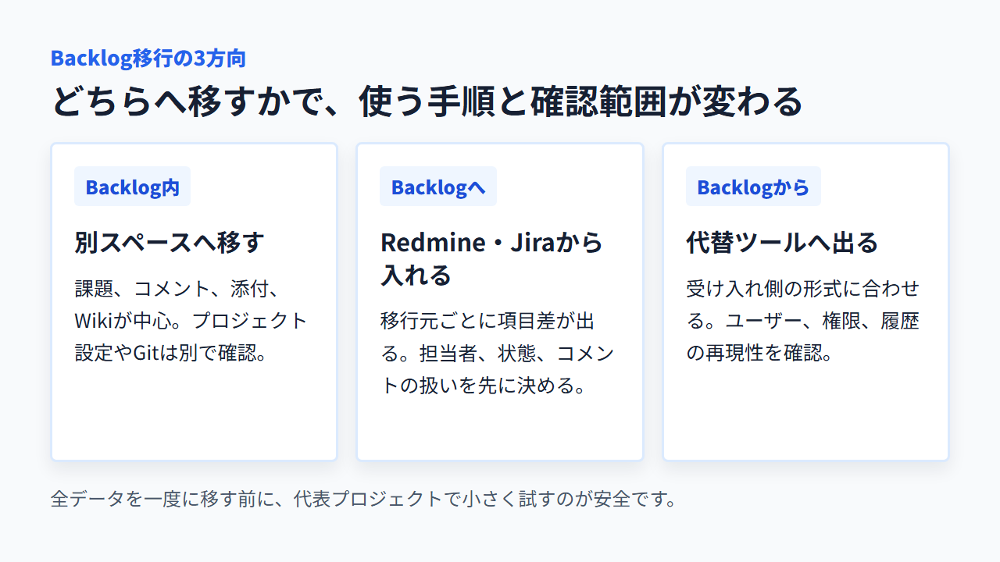
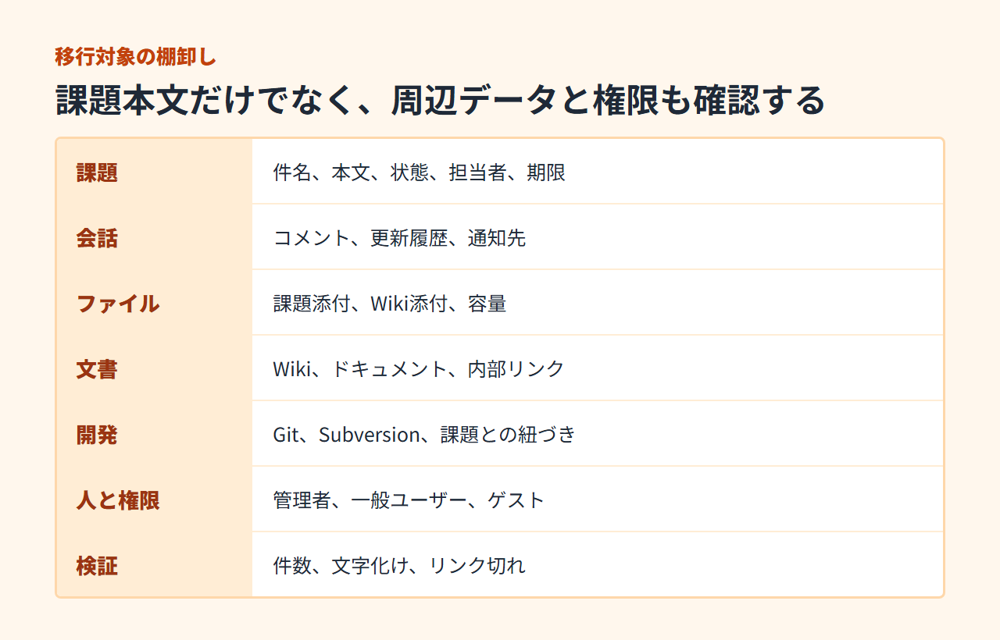
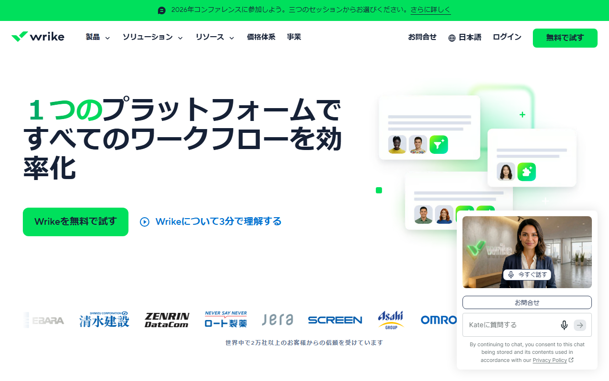
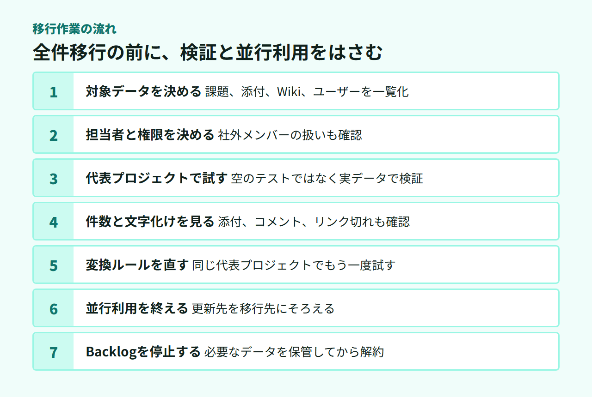

Backlog移行ツールとは？代替5選と乗り換え前の確認ポイント
Backlogは、課題やファイル、Wikiなどを一か所で管理するプロジェクト管理ツールです。ただし、「移行ツール」がBacklogへ入るためのものか、別製品へ出るためのものかは、言葉だけでは判別しにくいものです。
この記事では移行の向きを切り分け、代替5製品の違いと、乗り換え前に調べるデータ・権限を紹介します。
Backlogの代替5選と移行しやすさ
日本語UIを選べるクラウド型ならWrikeかmonday.comが候補です。開発向けはJira、自社で保守するならRedmine、部門をまたぐタスク管理にはAsanaが合います。
- Wrike：日本語UI／Freeは人数無制限
- monday.com：ボード中心／Freeは最大2席
- Jira：開発向け／Freeは最大10人
- Redmine：自社サーバーで運用するOSS
- Asana：部門横断向け／Freeは2人
ただし、公式の取り込み方法や対象項目は製品ごとに違います。Backlogの全データをまとめて移せるとは限りません。そこで、移行しやすさに順位は付けず、代替候補として紹介します。
迷ったら、まずWrikeを確認するのがおすすめです。日本語UIと日本語ヘルプがあり、Freeは利用人数に上限がないためです。ボード中心で少人数から始めるならmonday.comも候補になります。
Freeの上限、日本語サイト、有料プランの条件をまとめて確認できます。
Backlog移行ツールでできることは移行方向で違う
Backlogの移行は、向きによって三つに分かれます。最初に移行元と移行先を決めないと、使う手段や対象データを取り違えます。

Backlog内の別スペースへ移す場合
Backlogの公式移行ツールは、別スペースへのプロジェクト移行に使えます。対象は課題、課題のコメントと添付、Wikiです。
プロジェクト設定やGit・Subversionまで一括では移りません。まずバックアップと対象一覧を用意します。
Redmine・JiraなどからBacklogへ移す場合
Backlogには、RedmineやJiraなどからデータを取り込む公式の手段があります。この場合はBacklogが移行先です。
元の製品によって、移せる項目や準備が変わります。担当者、コメント、添付、状態の対応関係を先に決めます。
Backlogから別の製品へ乗り換える場合
BacklogからWrikeやmonday.comなどへ移る場合は、Backlog側から取り出したデータを、移行先が受け取れる形式に合わせます。Backlogの移行ツールだけでは完結しません。
取り込めるデータは製品ごとに違います。コメントや添付、ユーザー、履歴まで確認します。
乗り換え前に確認したいデータと権限
移行対象は、課題本文だけではありません。移せない項目は、手作業で移すか、元の環境へ保管するか、廃棄するかを決めます。

- 課題：件名、本文、状態、担当者、期限
- 会話：コメント、更新履歴、通知先
- ファイル：課題添付、Wiki添付、容量
- 文書：Wiki、ドキュメント、内部リンク
- 開発：Git、Subversion、課題との紐づけ
- 人と権限：管理者、一般ユーザー、ゲスト
- 検証：件数、文字化け、リンク切れ
課題・コメント・添付・Git/SVNは別々に棚卸しする
課題の件数が合っていても、添付やコメントが欠けていれば業務の記録は不完全です。GitやSubversionをBacklogで使っている場合は、リポジトリ本体と課題への参照を分けて考えます。
移行前には、プロジェクトごとに件数と容量を記録します。担当者や期限、完了状態も控えておけば、移行後に機械的に照合できます。
BacklogのWikiとドキュメントの違い
Wikiは、プロジェクト単位で情報を残す従来からの機能です。ドキュメントでは、文書を階層でまとめて共同編集できます。
新規スペースではWikiの提供が終わり、ドキュメントへ一本化されています。既存スペースのWikiからドキュメントへ移すときは、プロジェクト単位で実行します。
移行後は対象Wikiを編集できなくなるため、先に移行結果を確かめます。添付も移行されますが、移行先の本文には表示されません。三点リーダーの「添付ファイルを表示」から確認できます。
一般ユーザーとゲストの違いを移行先でも再設計する
一般ユーザーとゲストは、どちらも課題・Wiki・ファイル・リポジトリを利用できます。主な違いは、参照できるチームと、課題で通知できるチームの範囲です。ゲストは自分が所属するチームに限られます。
一般ユーザーとゲストには、それぞれ機能制限を設定できます。移行先の「ゲスト」が同じ権限とは限らないため、閲覧範囲と通知範囲を比べます。料金の対象になる条件も製品ごとに異なります。
再招待が必要な場合に備え、招待する担当者と付与する権限も決めておきます。
Backlogの代替5製品を用途別に紹介
代替候補は、クラウド型か自社サーバー型か、開発向けか部門横断かで絞れます。無料枠の人数に加え、実務で使う機能の制限も比較材料になります。
Wrike：日本語で使え、無料枠はユーザー数無制限

Wrikeは、日本語UIと日本語ヘルプを備えたクラウド型のプロジェクト管理ツールです。Freeはユーザー数無制限ですが、同時にアクティブにできるタスクとサブタスクは合計200件までです。共有スペースも1つに限られます。
ガントチャートやカスタムフィールドが必要なら有料プランが対象です。Teamは年払いの月額換算で1人10ドル、Businessは25ドル。1ドル=157円換算（執筆時点の目安。為替で変動）では、それぞれ約1,570円と約3,925円です。
30席以下は5席単位で販売されます。最低5席なら、Teamは月50ドル相当（約7,850円）、Businessは月125ドル相当（約19,625円）です。いずれも年額一括請求のため、利用者数だけで予算を決めないようにします。
Freeで使える機能と、Team・Businessの対象人数を日本語で比べられます。
monday.com：ボード中心で進捗を見せたい少人数チーム向け

monday.comは、案件をボード上の項目として並べ、担当や状態を見える形にするツールです。日本語UIを選べます。
Freeは最大2席で、3ボードと初期上限200アイテムです。紹介1件につき100アイテム増やせます。紹介は8件までで、合計1,000アイテムに拡張できます。自動化、外部連携、ゲスト招待は含まれません。
有料契約は最低3席から始まり、その後も定められた席数単位で購入します。
Freeの対象機能と、日本向けに表示される有料プランの条件を確認できます。
Jira：開発チームの課題管理を細かく設計したい場合
Jiraは、ソフトウェア開発の課題管理を細かく設計したいチームに向くクラウドサービスです。日本語UIと日本語ドキュメントがあります。
Freeは最大10ユーザーで、ストレージは2GB。StandardとPremiumには、支払い情報なしで始められる7日間のトライアルがあります。
月払いと年払いでは、選べる支払い方法が異なります。
日本円のプラン料金と、Free・Standard・Premiumの機能差を確認できます。
Redmine：サーバーを自社で管理できるチーム向け
Redmineは、GNU GPL v2で公開されている自社サーバー型のオープンソースソフトウェアです。日本語UIに対応し、課題管理のほかWikiやガントチャート、工数管理を備えます。
本体のライセンス料は0円ですが、商用SaaSの無料プランとは性格が違います。サーバーの構築・更新・バックアップ・障害対応には費用がかかり、担当者も必要です。
BacklogとRedmineを比べるときは、月額だけでなく保守の人件費まで含めます。社内でサーバーを管理できない場合は、クラウド型のほうが導入後の負担を抑えられます。
Redmine本体の機能、対応環境、インストール要件を公式情報で確認できます。
Asana：非開発部門を含むタスク管理をまとめたい場合
Asanaは、開発部門の課題に加え、営業やマーケティングなどのタスクもまとめたいチームに向きます。日本語UIと日本円の料金ページがあります。
無料のPersonalは2ユーザーまでです。タスクやプロジェクトは無制限ですが、タイムラインとガントチャートは有料のStarterから使えます。自動化とフォームもStarterが対象です。
社外の人を招く予定があるなら、有料プランのゲスト条件まで確認します。Backlogの一般ユーザーとゲストを、そのまま同じ名前へ置き換えないことが大切です。
Personalの上限と、Starter以上で追加される管理機能を日本語で見比べられます。
Backlogと5製品を比べる4つのポイント
料金だけで決めると、移行後の管理負担や権限差を見落とします。比較が必要なのは、クラウドの管理主体、課金単位、日本語サポート、公式の取り込み手段です。
クラウド型かセルフホスト型か
Backlog、Wrike、monday.com、Jira、Asanaはクラウド型です。提供会社が基盤を管理するため、自社でサーバーを更新する必要はありません。
Redmineは自社で設置する方式です。拡張やデータ配置を自社で決められる一方、更新やバックアップ、障害対応も自社の責任になります。
無料枠・課金単位・移行コスト
無料枠は、Wrikeが人数無制限、monday.comとAsanaが2人、Jiraが10人です。Backlogは現行Freeで10ユーザーですが、2027年1月1日に新Freeへ移行し、上限が5人になります。既存の6〜10人は継続できますが、新しいユーザーは追加できません。Redmineではサーバーと保守費用を計上します。
有料プランでは、1人単価だけでなく最低席数や購入単位が総額を左右します。データ整形、再招待、社内説明、並行利用の期間も移行コストに含まれます。
日本語UI・サポート・日本からの支払い
6製品はいずれも日本語UIを使えます。ただし、日本語画面があることと、日本語で個別相談できることは別です。
- Backlog：日本語サポートあり。銀行振込とカードに対応し、請求書を取得可能
- Wrike：日本語サイトとヘルプあり。カード払いで、USDの請求書を取得可能
- monday.com：日本語ヘルプあり。カード・PayPalを掲示し、請求書を取得可能
- Jira：日本語サポートあり。月払いはカード・PayPal、年払いは銀行振込にも対応。請求書PDFを取得可能
- Redmine：日本語UIあり。公式の有料契約と請求書はなく、日本語の個別サポートは未確認
- Asana：日本語ヘルプあり。カード・PayPalに対応し、請求書を取得可能。日本語の個別サポートは未確認
Wrikeで使えるカードブランドや、monday.comで日本から選べる支払い方法は購入画面で決まります。Redmineの外部ホスティングは、提供会社の条件に従います。
課題・Wiki・添付・ユーザーを移す公式手段
Backlog内の別スペースへ移す公式ツールは、課題、コメントと添付、Wikiを対象にします。一方、Backlogから代替製品へ出る場合は、各移行先の取り込み仕様を個別に調べます。
「CSVを読み込める」という説明だけでは不十分です。コメントや添付、ユーザー、権限、更新履歴を受け取れるか、項目ごとに確かめます。公式手段が見つからない項目は、手作業か保管を選びます。
日本向けの料金表示と、Freeで利用できるボード・アイテムの範囲を確認できます。
Backlogから代替ツールへ移行する手順
全件を一度に移さず、棚卸し、バックアップ、小規模テスト、照合、並行利用、旧契約の停止という順で進めます。

移行するデータと担当者を決める
最初に、Backlog側と移行先の管理者を決めます。次に、プロジェクトごとの課題件数、添付容量、ユーザー一覧を保存します。
移す項目と移さない項目を一覧にし、移せないものの扱いも決めます。特に社外メンバーは、再招待する担当者と付与する権限を明確にします。
代表プロジェクト1件でテストする
期限や添付、コメントがそろった代表的なプロジェクトを1件選びます。空のテスト案件より、実際のデータ構成に近い案件のほうが欠落を見つけられます。
この段階では、元データを消さずに残します。移行先で想定どおり表示されるまでは、全体移行へ進みません。
件数・添付・文字化け・リンク・権限を確認する
課題とコメントの件数を照合します。添付、文字化け、本文中のリンク切れも調べます。
担当者、期限、状態、通知先、社外メンバーの閲覧範囲も見比べます。問題があれば変換ルールを直し、同じ代表プロジェクトでもう一度試します。
並行運用を終えてからBacklogを解約する
全体移行後は、Backlogと移行先を短期間だけ並行して使います。新しい更新先を移行先に統一し、Backlogへ書き込む最終日をチームへ伝えます。
件数と権限の照合が終わり、必要なデータを保管してからBacklogを解約します。有料契約は期間途中で解約しても返金されないため、契約更新日も日程に含めましょう。
Backlogの移行と代替ツールでよくある質問
混同しやすいのは、移行ツールの向きと、Wikiとドキュメントの違いです。ユーザー権限やRedmineとの管理責任も含め、判断に必要な点だけ短く答えます。
Backlog移行ツールで他社製品へ移せる？
Backlogの公式移行ツールは、別スペースへの移行や、Redmine・JiraなどからBacklogへ入れる場面で使います。任意の他社製品へ書き出す万能ツールではありません。別製品へ乗り換える場合は、Backlogから取り出せる項目と移行先が受け取れる項目を別々に調べます。
BacklogのWikiとドキュメントは何が違う？
Wikiはプロジェクト単位の従来機能、ドキュメントは階層管理と共同編集に対応する機能です。2026年7月14日以降の新規スペースではWikiの提供がなく、添付もドキュメントへ移りますが本文には表示されません。
一般ユーザーとゲストはどう違う？
どちらも課題・Wiki・ファイル・リポジトリを使えます。ゲストが参照・通知できるチームは所属先に限られます。移行先でも、名称だけでなく、閲覧範囲と通知範囲、課金条件を対応させます。
BacklogとRedmineはどちらを選ぶ？
サーバー管理を提供会社に任せるならBacklog、自社で構成や拡張を管理するならRedmineが候補です。Redmineはライセンス料0円でも、サーバーと保守担当の費用がかかります。
まとめ：候補を一つ選び、小さく移行テストを始める
Backlog移行ツールは、移行の向きによって役割が変わります。代替製品へ乗り換えるなら、まず候補を一つ選び、代表プロジェクトで課題・添付・権限を試しましょう。
無料枠だけで決めると、Backlogの上限変更や移行作業の負担を見落とします。公式の取り込み対象を照らし合わせてから候補を絞ります。
- 日本語SaaSと人数無制限の無料枠：Wrike
- 少人数でボード中心に管理：monday.com
- 開発チームの課題管理：Jira
- 自社でサーバーを保守：Redmine
- 部門をまたぐタスク管理：Asana
テストで欠落がなければ、社外メンバーを再招待します。その後、並行利用を終え、必要なデータを保管してからBacklogを停止します。
Wrikeを候補にする場合は、Freeのタスク上限と有料プランの席数条件を確認できます。
monday.comを候補にする場合は、少人数向けFreeと有料契約の最低席数を見比べられます。